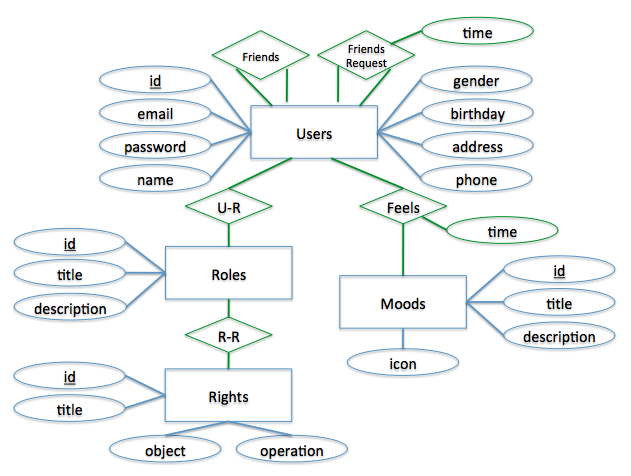
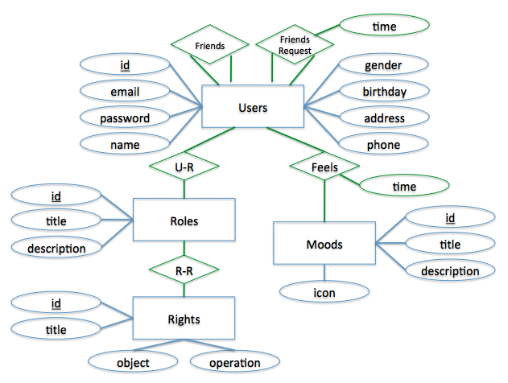

This is the hands-on work for my class at The George Washington University. The idea is exploring a typical architecture of social network applications. A GUI application running on mobile devices is used to collect users' daily information like current mood, and then transfer it into a central service system. The service calculates and feeds some statistic information in a long term basis back to users. Sharing can be realized on friends-based relationship. Advanced functions like diagnosis of personal life, making friends, and automatic greeting are possible.
As a proof of concept, a prototype architecture is designed and a simplified software system is demonstrated. Client software is developed on Android system. Service system is developed on popular LAMP (Linux, Apache, MySQL, PHP) platform. Client and server communicate with REST-style or similar interface.
Please find source code and documents at Github:
Here is a logic demonstration with web pages: